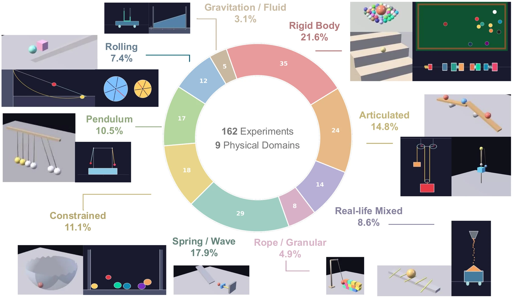
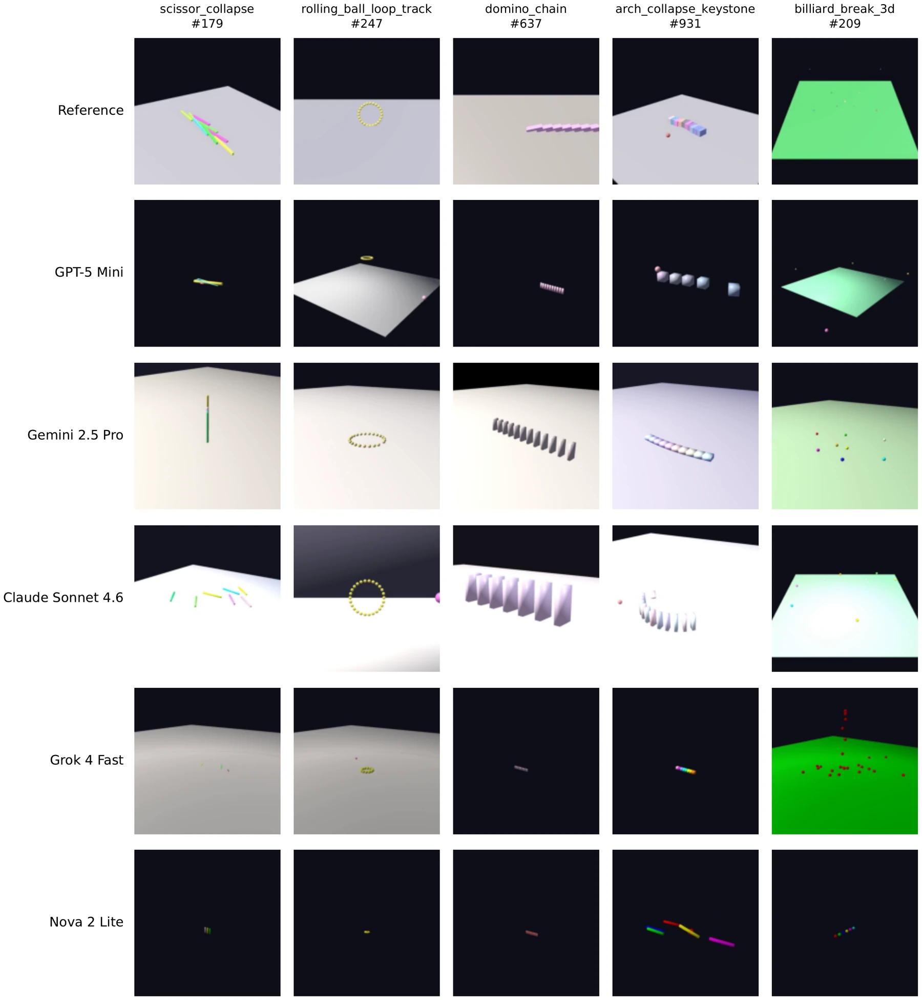

PhySimCode: A Benchmark and Evaluation Method for Physics Video to Code Generation
- PaperPhySimCode: A Benchmark and Evaluation Method for Physics Video to Code Generation
- AuthorsSouraja Kundu, Aditya Gupta, Joel Julin, Yizhou Zhao, Liuyue Xie, Laszlo A. Jeni
- FromCarnegie Mellon University, Amazon AGI
- arXivarXiv:2610.15722 (cs.CV), October 2026
- LinksEvaluation set · Evaluation code
Multimodal models understand videos and write code well. But describing a motion is not the same as finding the law behind it, estimating its parameters, or regenerating the scene from code. PhySimCode tests the whole chain: given only a video, a model must infer the physics, recover the parameter values and write runnable Python that reproduces the video.


The task
A model watches a rendered video and returns two things: a structured explanation in JSON (what it observes, the physical law, the parameters) and a Python program that simulates the process. To test physics rather than familiarity with an engine, it is told which engine was used and gets a code template that does not depend on the experiment.
The data
160.6K samples are generated procedurally from 162 phenomena: analytic simulations in SciPy, and rigid-body, articulated, fluid and contact-rich scenes rendered with PyBullet. Experts chose 69 phenomena themselves and 93 more from candidates proposed by language models. Each sample bundles the program that made it, its sampled parameters, the rendered video and a reference explanation covering observations, laws, equations, numerical method and checks. The released evaluation set has 2,430 videos.
How it is scored
Four axes. Physical laws are rated on a 1–5 scale by three language-model judges, twice: whether the stated law is correct at all, and whether it matches the reference. The regenerated video is compared with the input by human raters and by patch-wise similarity (DINOv2, VideoCLIP). The code is checked for running and for similarity to the reference. For parameters, predicted names are matched to the true ones, units are normalised, and a parameter counts when it is named and within ±20% of the true value.


What the paper found
Ten models are evaluated. They state physical laws well (4.27–4.93 out of 5) but infer them poorly from video (1.51–2.47). The best at parameters, Claude Sonnet 4.6, recovers only 7.7% of the true parameters within ±20%. Gemini 2.5 Pro is rated best by people for physical plausibility and equivalence, yet runs less of its code: its long reasoning uses up the output and cuts the program short. Patch-wise similarity is much more lenient than people: it follows appearance, while people notice any deviation in the physics.
Run it in Real2SimLab
Real2SimLab adapts the 2D (SciPy) phenomena. An agent watches the video and delivers PhySimCode's explanation
(cot.json) and a self-contained program that writes the video. The Lab re-runs the frozen program offline,
checks that it produces a readable video, and matches the reported parameters to the true ones as PhySimCode does.
The headline is the share of true parameters recovered within 20%, pooled over tasks; a task with no delivery counts
with none recovered. The judged metrics are not adapted yet. PhySimCode's evaluation code declares no license, so it is
fetched from its authors at a pinned commit when tasks are scored, and never copied.
r2s env build r2s-physimcode r2s-agent-codex-physimcode r2s bench build physimcode --out tasks/psc r2s eval --tasks tasks/psc --method codex=codex:image=r2s-agent-codex-physimcode --out runs/psc
More in the documentation.